React, D3 and
the dataviz ecosystem
Online

Next up
- D3
- React
- React + D3
- Choosing an approach
What is D3.js?
- Data-Driven Documents
- Low level, General Purpose Visualization Library
- Manipulates data based documents
- Open web standards (SVG, HTML, CSS and now Canvas)
- Allows interactions with your graphs
How does it work?
- Loads data
- Binds data to elements
- Transforms those elements
- Transitions between states
D3 Demo

D3 v4 Update
- More modular
- API improvements
- Breaking changes
- Highly adopted
D3 Data Joins
Transforms the DOM by selecting elements and joining to data
Data Join

Update, Enter
and Exit Pattern
Resources
D3 Patterns and
Best Practices
Component Patterns
D3 Testing
D3 is hard
D3 Libraries


 


Dynamic Child Components
- Unique 'key' to each child component rendered
- More efficient rendering
- Similar to D3's data joins
Reconciliation - React Docs
React Fiber
- Renderer and Reconciler are separated
- New reconciliating algorithm
- From batching DOM operations, now React can...
- Prioritize tasks
- Split into chunks and schedule
- Parallelize operations
A Cartoon Intro to Fiber by Lin Clark
Commonalities
- Help us with the DOM
- Love pure functions
Challenges
- D3 creates and transforms the DOM
- React as well, and keeps track of it
- Not meant to work together
React + D3 Approaches
D3 within React
- React renders root svg element
- D3 creates chart in componentDidUpdate
- Block chart updates with shouldComponentUpdate
D3 within React
Pros/Cons
- ✓ Works fine
- ✓ Easiest when visualization is already implemented
- ✗ Not idiomatic on React
- ✗ A bit nasty
React Faux DOM
It's a way to use existing D3 tooling but render it efficiently through React with the React ethos.
D3 within React the right way
React Faux DOM
Pros/Cons
- ✓ Use all D3 APIs
- ✓ Good integration with already built D3
- ✓ Server Side Rendering
- ✗/✓ Need to use React Animations
- ✗ Less performant
- ✗ Limited to small/medium size dataviz
Lifecycle Methods Mapping
- Lightweight React Component Wrapper
- D3-only file with create, update and unmount methods
Integrating D3.js visualizations in a React app
Lifecycle Methods Mapping
Pros/Cons
- ✓ Easy to integrate D3 on
- ✓ Flexible, could encapsulate any chart
D3 for the Math,
React for the DOM
- D3 is used for math and formats
- React rules the DOM
## D3 sub-modules: DOM Related
* [Selections (d3-selection)](https://github.com/d3/d3-selection)
* [Transitions (d3-transition)](https://github.com/d3/d3-transition)
* [Axes (d3-axis)](https://github.com/d3/d3-axis)
* [Zooming (d3-zoom)](https://github.com/d3/d3-zoom)
* [Dragging (d3-drag)](https://github.com/d3/d3-drag)
* [Brushes (d3-brush)](https://github.com/d3/d3-brush)
* [Geographies (d3-geo)](https://github.com/d3/d3-geo)
* [Shapes (d3-shape)](https://github.com/d3/d3-shape)
Note:
* This are the d3 sub-modules that have some relation with the DOM
D3 for the Math,
React for the DOM
Pros/Cons
- ✓ Consistent with the React way
- ✗ A lot of work upfront
- ✗ D3 Reimplementation of certain parts
- ✗ Limited to SVG rendering
 Reference
Reference
React + D3 Libraries
Research Insights
- Non-maintained libraries
- Not easy to keep up with D3 and React
- D3 v4 cleaned up the field

Linechart Code

VictoryJS
- Easy to get started
- Zoom and Voronoi
- React Native option

Linechart Code

Recharts
- Really well tested
- Charts plus legend, tooltip and brush
- Great docs

react-vis
- react-motion animations
- Sunburst and Sankey
- Lack of tooltips
Choosing an approach
Choosing criteria

- Well tested
- D3 V4
- Great docs
- Long term investment?
- Needs to be done ASAP?
- Highly customized?
- Basic charts?
- One-off work?
- Dataviz heavy product?
Conclusions
- D3 and React can work together
- They both move fast
- Hard to decide!
Data-Joins Resources

 Demo: https://golodhros.github.io/talk-react-d3/
Code: https://github.com/Golodhros/talk-react-d3
Demo: https://golodhros.github.io/talk-react-d3/
Code: https://github.com/Golodhros/talk-react-d3
 http://tinyurl.com/d3-react-lib-comparative
http://tinyurl.com/d3-react-lib-comparative